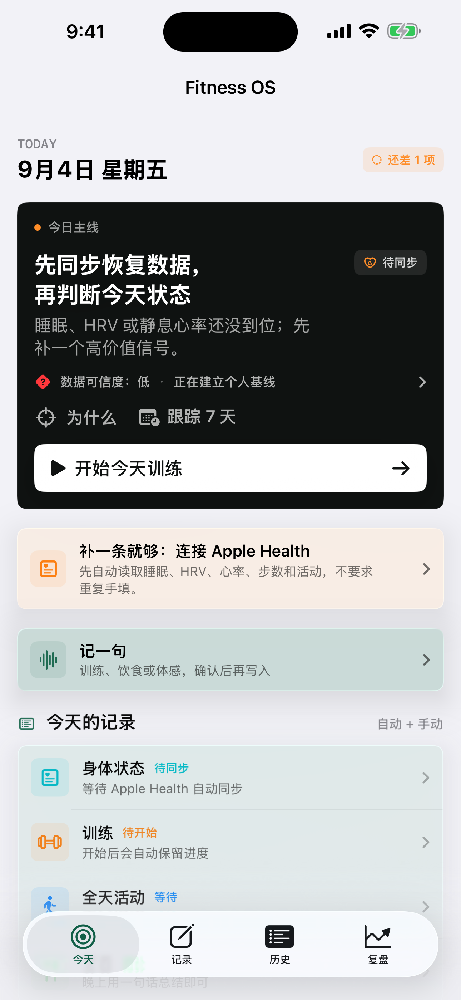

01 / 身体与记录
Fitness OS
训练、饮食和身体状态，
怎么放在一起回看？
- 现场问题
- 记录散在不同地方，回头判断当天状态时还要重新拼起来。
- 我的取舍
- 输入后先确认；缺失就显示缺失；行动之后保留反馈入口。
- 可查看的交付
- 原生 iPhone 版界面、网页版、工作流演示和规则样板。

原生版接入 Apple Health；网页版功能范围不同。AI 产品实习 / 2027 届
我是王天如，Korey。做过健身教练和剧本杀 DM，也为自己的备考做工具。我的产品实践，从这些具体的使用场景开始。
我负责问题定义、流程设计、实际使用与验收。
AI 协助编码实现。
先看方向、背景和做过的事。
02 / 深入一个项目Fitness OS 案例 ↗看问题、取舍，以及可以体验的产品。
03 / 直接体验打开产品示例 ↗使用虚构数据，浏览网页版的完整界面。
SELECTED WORK / 01—03
每个项目都讲清三件事：
为什么做、我如何判断、现在能看什么。
01 / 身体与记录
训练、饮食和身体状态，
怎么放在一起回看？

原生版接入 Apple Health；网页版功能范围不同。HOW I WORK
工具会变，具体问题和验收标准
需要有人一直负责。
是在训练后记录、备考时复习，还是上场前查阅？先判断谁在什么时刻需要它。
哪些信息必须确认、哪些缺口不能猜、哪一步应该先做，都落实到界面与规则。
拆清需求与交付范围，借助 Agent 编码，再回到具体流程检查结果。
界面能打开只是开始。记录是否正确、资料能否找到、结果有没有用，需要实际操作。
LET’S TALK
可以从一个具体项目聊起：问题怎么发现，为什么这样设计，还有哪些地方需要继续验证。